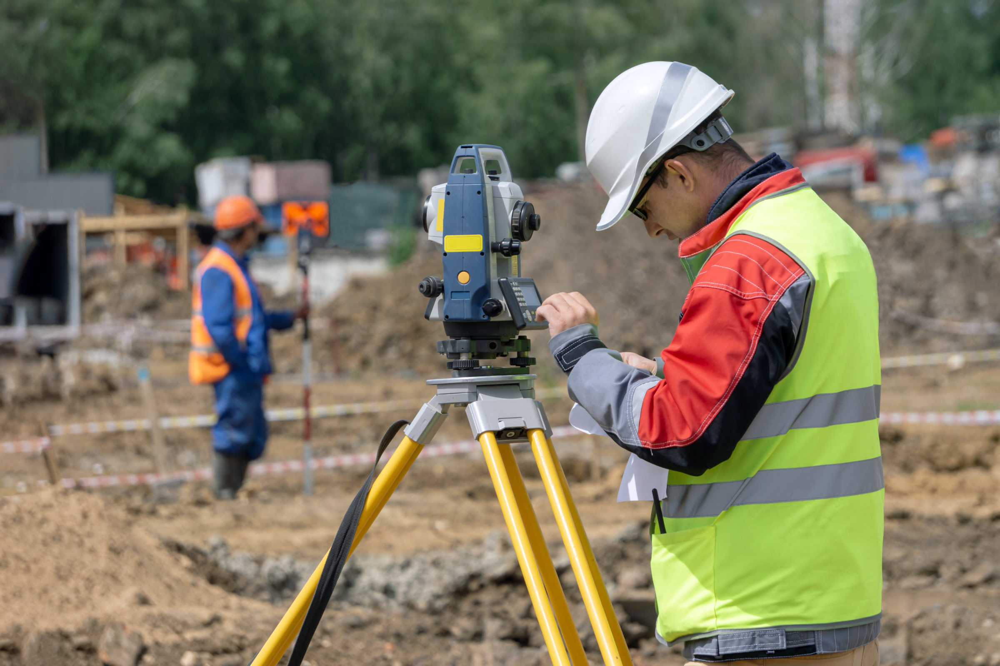

Arquiler
Sobre lo equipos topograficos
las herramientas topográficas incluyen instrumentos utilizados por los topógrafos para medir y cartografiar
características del terreno. Algunas de estas herramientas son:
Teodolito: para medir ángulos.
Niveles, tránsitos y receptores GPS: para mediciones precisas.
Láseres y LIDAR: para recopilar datos geográficos.
Cintas métricas, ruedas de medición, estaciones totales y varillas de medición: herramientas esenciales para
los topógrafos
Servicios topograficos